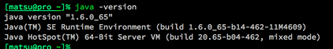
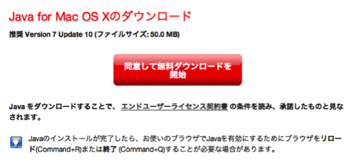
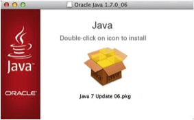
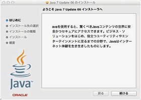
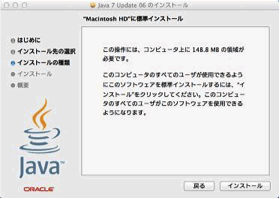
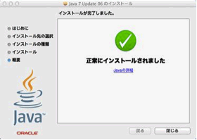

AptanaはJavaに依存しているため、Javaがインストールされていない場合は、Javaをインストールします。
[ターミナル] を立ち上げます。
ターミナルに、以下のように入力して[Enter]キーを押します。
% java -version
以下のようにバージョン番号が表示されれば、既にインストールされているのでここで、Javaのインストールをする必要は有りません。

以下のサイトへアクセスし、Javaをダウンロードします。
「同意して無料ダウンロードを開始」ボタンをクリックすると、ダウンロードが開始されるためデスクトップなどの適当な場所へファイルを保存します。

保存したファイルを開き、表示されたないよう通りに進んで行けばインストールを完了できます。




再度、以下を入力してバージョン番号が表示されるかを確認します。
% java -version